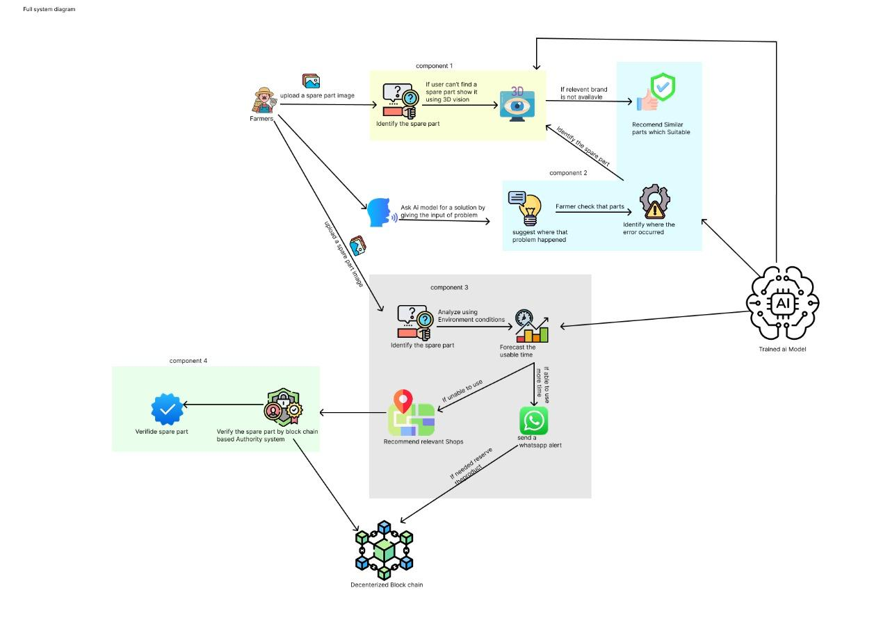

Main Objective
Empowering agricultural workers with accessible, mobile-based tools for machinery lifecycle forecasting and intelligent spare part management.
A comprehensive research initiative combining AI, blockchain, and 3D visualization to modernize agricultural machinery management.
Utilizing YOLOv8 & MobileNetV2 for identifying mechanical wear on tractor tyres and V-belts with real-time mobile detection.
A decentralized ledger ensuring spare part transparency, ownership history, and counterfeit prevention via smart contracts.
An intelligent multi-factor system that dynamically identifies compatible and functionally equivalent spare parts using rule-based filtering, semantic similarity, and confidence-driven ranking.
ResNet-50 powered recognition mapped to interactive 3D machine models with rotate, zoom and highlight features.
An analysis of current agricultural machinery maintenance approaches and their shortcomings.
ResNet-50 · Transfer Learning · Three.js
Computer vision techniques such as CNNs have significantly improved object classification tasks. Models like ResNet-50 are widely used due to their ability to extract complex visual features. Transfer learning has further improved performance by enabling models to adapt to domain-specific datasets with limited data.
However, most studies focus only on classification and ignore spatial context. Visualization techniques such as 3D modeling are used in engineering but are rarely integrated with AI recognition systems for agriculture.
YOLOv8 · MobileNetV2 · Random Forest · RUL
Early approaches used classification models like MobileNetV2 for wear detection but were limited to whole-image predictions. Recent advancements introduced object detection models (YOLOv8), which allow localization of defects and detection of multiple damage areas simultaneously.
However, many systems still lack integration with lifecycle forecasting pipelines and real-world agricultural datasets, leaving proactive maintenance unsupported.
Random Forest · Semantic Similarity · Rule-Based Filtering
Spare part recommendation systems have traditionally relied on catalogue matching and manual lookup. Recent research explores machine learning approaches using feature similarity and rule-based filtering for compatibility determination.
However, existing systems lack confidence-driven ranking, semantic similarity analysis, and explainable outputs tailored to agricultural machinery contexts.
Hyperledger Fabric · Smart Contracts · QR · JWT
Blockchain technology has been widely used for secure data storage, transparency, and traceability. Hyperledger Fabric provides a permissioned blockchain framework suitable for enterprise-level supply chain applications.
QR-based systems are used for product verification but lack secure backend integration and ownership tracking. Existing supply chains remain centralized and vulnerable to counterfeit products and data manipulation.
Critical gaps in the current body of research that this project directly addresses.
Existing computer vision systems for spare part identification only classify component names. There is no integrated system combining AI image recognition with interactive 3D visualization to provide spatial understanding of where a part is located within the machine.
Most wear detection systems use classification models that cannot localize defects or integrate with forecasting pipelines. There is no predictive model that combines wear data and usage data to estimate Remaining Useful Life for agricultural spare parts.
Spare part selection relies on manual lookup or simple catalogue matching. There is no intelligent system that applies rule-based filtering, semantic similarity, and confidence-driven ranking to recommend functionally equivalent parts.
Current spare part supply chains lack transparency, secure verification, and ownership tracking. Centralized systems are vulnerable to data manipulation, counterfeit products, and fragmented lifecycle records with no immutable audit trail.
Farmers and agricultural workers face unexpected machine failures, counterfeit spare parts, and significant difficulty identifying correct replacements — due to a critical lack of intelligent, spatially-aware, and integrated digital tools — resulting in prolonged downtime, financial losses, and reduced agricultural productivity.
Users cannot identify where a component is located within a machine. Existing systems only provide labels with no 3D spatial context or interactive guidance.
Manual wear inspection is subjective and inconsistent. AI classification models cannot detect multiple defects or localize damage, preventing proactive maintenance decisions.
Users cannot verify spare part authenticity or track ownership history. Manual and centralized systems are unreliable, fragmented, and easily manipulated.
Maintenance decisions are experience-based and reactive. There is no system to predict failure time or estimate remaining useful life for proactive planning.
Farmers and mechanics rely on manual lookup and guesswork when selecting spare parts. There is no system that applies rule-based filtering, semantic similarity, and confidence scoring to recommend functionally equivalent replacements.
Develop a ResNet-50 image recognition model using transfer learning. Integrate classification results with interactive 3D machine models to provide intuitive spatial understanding of spare part location and context.
Build a predictive ML model (YOLOv8 + MobileNetV2 + Random Forest) integrating wear detection outputs and usage data to estimate Remaining Useful Life (RUL) and provide proactive maintenance recommendations.
Design a multi-stage recommendation engine applying rule-based filtering, semantic similarity analysis, and confidence-driven Random Forest ranking to identify reliable and functionally equivalent spare parts.
Implement a Hyperledger Fabric blockchain with JWT-secured QR authentication, smart contracts (RegisterPart, VerifyPart, TransferOwnership), and a FastAPI-backed system for immutable spare part lifecycle traceability.
A modular, iterative development approach across four parallel research streams.
Images of spare parts collected from local farms, spare part shops, and mechanical workshops — with variations in lighting, angles, and backgrounds.
Remove low-quality images. Resize to 224×224px. Normalize pixel values. Apply augmentation: rotation, flipping, brightness adjustment.
Transfer learning with pre-trained ImageNet weights. Freeze initial layers. Add custom fully connected layers. Fine-tune deeper layers for improved accuracy.
Evaluate using accuracy, precision, recall, and confusion matrix. Validate on test dataset.
Create or obtain 3D models of machinery components. Map classified output to corresponding 3D object using Three.js/Unity rendering engine.
Highlight detected component in 3D model. Enable rotation, zoom, and interactive exploration. Optimize with TensorFlow Lite for mobile deployment.
Collect wear detection outputs from the CV module, machine usage hours, and optional environmental factors.
Clean and normalize data. Handle missing values. Extract features: wear severity, usage hours, frequency of operation. Scale for model training.
Evaluate Linear Regression, Random Forest, and time-series models. Train on historical data to learn wear-to-failure relationships.
Input current wear + usage data → estimate degradation rate → predict Remaining Useful Life (RUL). Metrics: MAE, RMSE.
Provide remaining lifespan, risk level, and maintenance recommendations. Integrate with CV module (input) and recommendation system (output).
Collect spare part dataset. Remove duplicates, fix missing values, normalize and encode all features (part name, brand, category, material, diameter, price, function type).
Map machine family, function type, and substitute levels. Define hard compatibility rules and soft preference filters.
Apply hard filters (category, machine type, function) to narrow candidates. Apply soft filters (price range, material, brand) for preference-based shortlisting.
Compute feature-based similarity across candidates. Random Forest predicts compatibility score → confidence-driven ranked recommendation list with explanations.
Evaluate recommendation precision and ranking quality. Deploy as API integrated with the Smart Farmer mobile and web interface.
Conduct interviews with farmers, spare part sellers, and buyers. Identify lack of verification, informal transactions, and no ownership tracking.
Design hybrid architecture: Frontend UI → FastAPI Backend → Hyperledger Fabric blockchain → PostgreSQL database, hosted on AWS EC2.
Deploy Hyperledger Fabric on Docker/AWS EC2. Develop chaincode: RegisterPart, VerifyPart, TransferOwnership. Ensure immutability and security.
Generate QR code with unique ID and JWT-based secure token per part. Develop FastAPI to connect UI, blockchain, and database. Implement two-step ownership transfer.
Deploy backend + blockchain on AWS EC2. Evaluate: response time, tamper resistance, and reliability under real-world conditions.
Each module independently solves a critical problem while contributing to the unified Smart Farmer platform.
ResNet-50 · Three.js · Interactive Models
YOLOv8 · MobileNetV2 · RUL Prediction
Random Forest · Semantic Similarity · Multi-Filter
Hyperledger Fabric · Smart Contracts · QR Identity
An AI-powered image recognition system that identifies spare parts and maps them to interactive 3D machine models for intuitive spatial understanding.
Users face difficulties identifying spare parts due to similar appearances, lack of technical knowledge, and absence of spatial understanding. Existing systems only provide labels and do not help users understand where the component is located or how it fits into the machine.
Photo of the spare part via mobile app or web interface
Transfer learning model identifies the spare part type with confidence score
Classification output with probability breakdown displayed
Corresponding machine 3D model rendered in browser
Detected part highlighted on 3D model with location guidance and repair annotations
An AI-driven predictive system that forecasts spare part remaining useful life using wear detection outputs, usage data, and machine learning models.
Maintenance decisions are reactive and experience-based. There is no system to predict when a spare part will fail or estimate its remaining useful life — causing unexpected breakdowns and costly unplanned downtime during critical farming operations.
Wear detection outputs, machine usage hours, and operational frequency collected
Clean and normalize data. Handle missing values. Extract features: wear severity, usage hours, frequency of operation. Scale for model training.
Evaluate Linear Regression, Random Forest, and time-series models. Train on historical data to learn wear-to-failure relationships.
Current wear + usage data → degradation rate estimated → Remaining Useful Life predicted
Risk level, lifespan estimate, and maintenance action delivered to user
An intelligent multi-factor system that dynamically identifies compatible and functionally equivalent spare parts using rule-based filtering, semantic similarity, and confidence-driven ranking.
Farmers and local mechanics frequently select wrong spare parts due to lack of compatibility knowledge, leading to mechanical failures, wasted expenditure, and prolonged downtime.
Develop a multi-stage compatibility recommendation engine that applies structured rules, feature similarity, and confidence-based scoring to identify reliable and functionally equivalent spare parts.
Remove duplicates · fix missing values · normalize and encode features
Hard filters: category, machine type, function · Soft filters: price range, material, brand preference
Feature-based similarity computed across compatible part candidates using encoded attributes
Random Forest model predicts compatibility score → ranked list with confidence & explainable output
A decentralized trust layer ensuring every spare part has a verified, immutable digital identity from manufacture to end of life.
Counterfeit spare parts are rampant in rural agricultural markets. Without verifiable provenance, farmers unknowingly install fake components that fail prematurely and create safety hazards.
Digital identity minted on Hyperledger Fabric with unique QR code and JWT token
Smart contract records distributor → retailer → farmer chain with two-step approval
User scans QR → FastAPI queries blockchain → authenticity confirmed in real time
Service events appended to immutable ledger via smart contract
Complete lifecycle trace returned to user — manufacture to current owner
The full technology stack powering the Smart Farmer AI platform.
High-level overview of the Smart Farmer platform architecture and component interactions.

All research documents, reports, and logbooks.
Slide decks from all project assessments and presentations.
Four researchers, each leading a critical module of the Smart Farmer AI platform.
Leads the Computer Vision module. Responsible for YOLOv8 and MobileNetV2 model training, dataset labelling, and mobile integration of real-time wear detection.
Leads the 3D Visualization & Identification module. Responsible for ResNet-50 transfer learning model training, 3D model integration using Three.js, spatial component highlighting, and mobile WebGL optimization.
Leads the Blockchain module. Responsible for Hyperledger Fabric deployment, smart contract development (RegisterPart, VerifyPart, TransferOwnership), QR identity implementation, and FastAPI backend integration.
Leads the Compatibility Recommender module. Responsible for rule-based filtering system design, semantic similarity analysis, Random Forest model development, and confidence-driven ranking pipeline.
Reach out to the Smart Farmer research team.
Research Lead
Phone
94776183693
Institution
Sri Lanka Institute of Information Technology